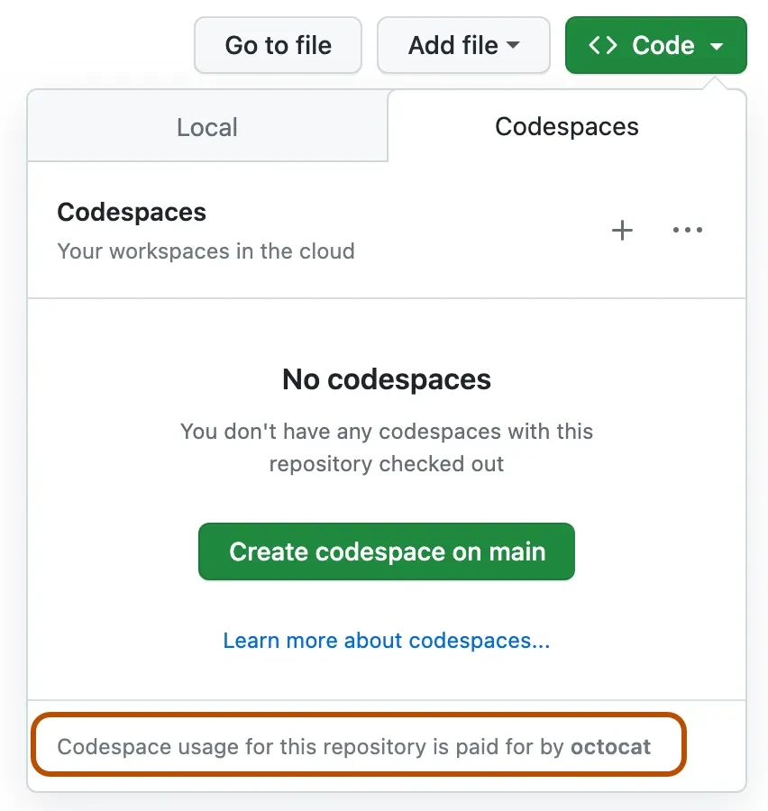

Commencer avec ce cours#
Nous sommes très enthousiastes que vous commenciez ce cours et découvriez ce que vous inspirez à créer avec l'IA générative !
Pour assurer votre réussite, cette page décrit les étapes d'installation, les exigences techniques, et où obtenir de l'aide si nécessaire.
Étapes d'installation#
Pour commencer ce cours, vous devrez compléter les étapes suivantes.
1. Forker ce dépôt#
Forkez ce dépôt complet vers votre propre compte GitHub afin de pouvoir modifier le code et réaliser les défis. Vous pouvez également étoiler (🌟) ce dépôt pour le retrouver plus facilement ainsi que les dépôts associés.
2. Créer un codespace#
Pour éviter tout problème de dépendances lors de l'exécution du code, nous recommandons d'exécuter ce cours sur un GitHub Codespaces.
Dans votre fork : Code -> Codespaces -> New on main

2.1 Ajoutez un secret#
- ⚙️ Icône engrenage -> Command Pallete -> Codespaces : Manage user secret -> Ajouter un nouveau secret.
- Nommez OPENAI_API_KEY, collez votre clé, Enregistrez.
3. Et ensuite ?#
| Je veux… | Aller à… |
|---|---|
| Commencer la Leçon 1 | 01-introduction-to-genai |
| Travailler hors-ligne | setup-local.md |
| Configurer un fournisseur LLM | providers.md |
| Rencontrer d'autres apprenants | Rejoignez notre Discord |
Résolution des problèmes#
| Symptôme | Solution |
|---|---|
| La construction du conteneur bloque > 10 min | Codespaces ➜ “Rebuild Container” |
python: command not found |
Terminal non connecté ; cliquez sur + ➜ bash |
401 Unauthorized de l'API OpenAI |
OPENAI_API_KEY erronée ou expirée |
| VS Code affiche “Dev container mounting…” | Actualisez l'onglet du navigateur — Codespaces perd parfois la connexion |
| Noyau du notebook manquant | Menu notebook ➜ Kernel ▸ Select Kernel ▸ Python 3 |
Systèmes Unix :
touch .env
Windows :
echo . > .env
-
Modifiez le fichier
.env: Ouvrez le fichier.envdans un éditeur de texte (par exemple, VS Code, Notepad++, ou autre éditeur). Ajoutez la ligne suivante, en remplaçantyour_github_token_herepar votre jeton GitHub réel :GITHUB_TOKEN=your_github_token_here
-
Enregistrez le fichier : Sauvegardez les modifications et fermez l'éditeur de texte.
-
Installez
python-dotenv: Si ce n’est pas déjà fait, vous devez installer le paquetpython-dotenvpour charger les variables d’environnement du fichier.envdans votre application Python. Vous pouvez l’installer avecpip:pip install python-dotenv
-
Chargez les variables d’environnement dans votre script Python : Dans votre script Python, utilisez le paquet
python-dotenvpour charger les variables d’environnement du fichier.env:from dotenv import load_dotenv import os # Charger les variables d'environnement depuis le fichier .env load_dotenv() # Accéder à la variable GITHUB_TOKEN github_token = os.getenv("GITHUB_TOKEN") print(github_token)
C’est fait ! Vous avez créé avec succès un fichier .env, ajouté votre jeton GitHub, et l’avez chargé dans votre application Python.
Comment exécuter localement sur votre ordinateur#
Pour exécuter le code localement sur votre ordinateur, vous devez avoir une version de Python installée.
Ensuite, pour utiliser le dépôt, vous devez le cloner :
git clone https://github.com/microsoft/generative-ai-for-beginners
cd generative-ai-for-beginners
Une fois que vous avez tout configuré, vous pouvez commencer !
Étapes optionnelles#
Installer Miniconda#
Miniconda est un installateur léger pour installer Conda, Python, ainsi que quelques paquets.
Conda est un gestionnaire de paquets qui facilite la création et la gestion de différents environnements virtuels Python et paquets. Il est aussi utile pour installer des packages qui ne sont pas disponibles via pip.
Suivez le guide d'installation de Miniconda pour l’installer.
Après avoir installé Miniconda, vous devez cloner le répertoire (si ce n’est pas déjà fait).
Ensuite, créez un environnement virtuel. Pour cela, avec Conda, créez un fichier d’environnement (environment.yml). Si vous suivez avec Codespaces, créez-le dans le répertoire .devcontainer, donc .devcontainer/environment.yml.
Remplissez votre fichier d’environnement avec l’extrait ci-dessous :
name: <environment-name>
channels:
- defaults
- microsoft
dependencies:
- python=<python-version>
- openai
- python-dotenv
- pip
- pip:
- azure-ai-ml
Si vous rencontrez des erreurs avec conda, vous pouvez installer manuellement les bibliothèques Microsoft AI avec la commande suivante dans un terminal.
conda install -c microsoft azure-ai-ml
Le fichier d’environnement précise les dépendances nécessaires. <environment-name> est le nom que vous souhaitez donner à votre environnement Conda, et <python-version> est la version Python souhaitée, par exemple 3 est la dernière version majeure.
Avec cela fait, créez votre environnement Conda en exécutant les commandes suivantes dans votre terminal :
conda env create --name ai4beg --file .devcontainer/environment.yml # Le sous-chemin .devcontainer s'applique uniquement aux configurations Codespace
conda activate ai4beg
Référez-vous au guide des environnements Conda en cas de problème.
Utiliser Visual Studio Code avec l’extension support Python#
Nous recommandons d’utiliser l’éditeur Visual Studio Code (VS Code) avec l’extension de support Python installée pour ce cours. Toutefois, c’est une recommandation, non une obligation.
Note : En ouvrant le dépôt du cours dans VS Code, vous pouvez configurer le projet dans un conteneur. Ceci est possible grâce au répertoire spécial
.devcontainerprésent dans le dépôt du cours. Plus d’explications plus tard.
Note : Une fois le dépôt cloné et ouvert dans VS Code, il vous proposera automatiquement d’installer une extension de support Python.
Note : Si VS Code vous suggère de rouvrir le dépôt dans un conteneur, refusez cette demande pour utiliser la version locale de Python.
Utiliser Jupyter dans le navigateur#
Vous pouvez aussi travailler sur le projet en utilisant l’environnement Jupyter directement dans votre navigateur. Jupyter classique et Jupyter Hub fournissent un environnement de développement agréable avec l’autocomplétion, la coloration du code, etc.
Pour lancer Jupyter localement, ouvrez un terminal, positionnez-vous dans le répertoire du cours, et exécutez :
jupyter notebook
ou
jupyterhub
Cela démarrera une instance Jupyter, et l’URL pour y accéder sera affichée dans le terminal.
Lorsque vous accédez à l’URL, vous devriez voir le plan du cours et pouvoir naviguer vers n’importe quel fichier *.ipynb. Par exemple, 08-building-search-applications/python/oai-solution.ipynb.
Exécuter dans un conteneur#
Une alternative à l’installation locale ou dans un Codespace est d’utiliser un conteneur. Le dossier spécial .devcontainer dans le dépôt du cours permet à VS Code de configurer le projet dans un conteneur. En dehors des Codespaces, cela nécessite l’installation de Docker, ce qui demande un peu de travail ; nous recommandons donc cette option uniquement aux personnes expérimentées avec les conteneurs.
Un des meilleurs moyens de sécuriser vos clés API lors de l’utilisation de GitHub Codespaces est d’utiliser les Secrets Codespaces. Veuillez suivre le guide Gestion des secrets dans Codespaces pour en savoir plus.
Leçons et exigences techniques#
Le cours comprend 6 leçons de concepts et 6 leçons de codage.
Pour les leçons de codage, nous utilisons le service Azure OpenAI. Vous aurez besoin d’un accès au service Azure OpenAI et d’une clé API pour exécuter ce code. Vous pouvez demander l’accès en complétant cette demande.
En attendant le traitement de votre demande, chaque leçon de codage inclut un fichier README.md où vous pouvez consulter le code et les résultats.
Utiliser le service Azure OpenAI pour la première fois#
Si c’est la première fois que vous travaillez avec le service Azure OpenAI, veuillez suivre ce guide pour créer et déployer une ressource Azure OpenAI Service.
Utiliser l’API OpenAI pour la première fois#
Si c’est la première fois que vous travaillez avec l’API OpenAI, veuillez suivre le guide pour créer et utiliser l’interface.
Rencontrer d’autres apprenants#
Nous avons créé des canaux sur notre serveur officiel AI Community Discord pour rencontrer d’autres apprenants. C’est un excellent moyen de réseauter avec d’autres entrepreneurs, créateurs, étudiants, et toute personne souhaitant progresser en IA générative.
L’équipe projet sera également sur ce serveur Discord pour aider les apprenants.
Contribuer#
Ce cours est une initiative open source. Si vous voyez des axes d’amélioration ou des problèmes, veuillez créer une Pull Request ou ouvrir un issue GitHub.
L’équipe projet suivra toutes les contributions. Contribuer à l’open source est un excellent moyen de faire avancer votre carrière en IA générative.
La plupart des contributions nécessitent une acceptation d’un Contrat de Licence de Contributeur (CLA) déclarant que vous avez le droit et que vous accordez effectivement les droits d’utilisation de votre contribution. Pour plus de détails, visitez le site CLA, Contributor License Agreement.
Important : Lors de la traduction de texte dans ce dépôt, merci de ne pas utiliser de traduction automatique. Nous vérifierons les traductions via la communauté, donc ne proposez une traduction que dans des langues où vous êtes compétent.
Lorsque vous soumettez une pull request, un CLA-bot déterminera automatiquement si vous devez fournir un CLA et ajoutera les labels ou commentaires appropriés. Il suffit de suivre les instructions du bot. Vous ne devrez le faire qu’une seule fois pour tous les dépôts utilisant notre CLA.
Ce projet a adopté le Code de conduite open source Microsoft. Pour plus d’informations, lisez la FAQ sur le Code de conduite ou contactez Email opencode pour toute question ou commentaire supplémentaire.
Commençons !#
Maintenant que vous avez terminé les étapes nécessaires pour compléter ce cours, commençons par une introduction à l'IA générative et aux LLMs.
Avertissement :
Ce document a été traduit à l’aide du service de traduction automatique Co-op Translator. Bien que nous nous efforçons d’assurer l’exactitude, veuillez noter que les traductions automatiques peuvent contenir des erreurs ou des inexactitudes. Le document original dans sa langue d’origine doit être considéré comme la source officielle. Pour les informations critiques, il est recommandé de recourir à une traduction professionnelle effectuée par des humains. Nous déclinons toute responsabilité en cas de malentendus ou de mauvaises interprétations résultant de l’utilisation de cette traduction.